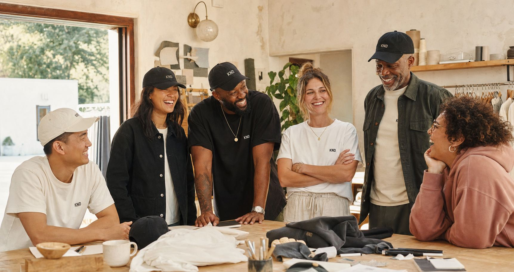
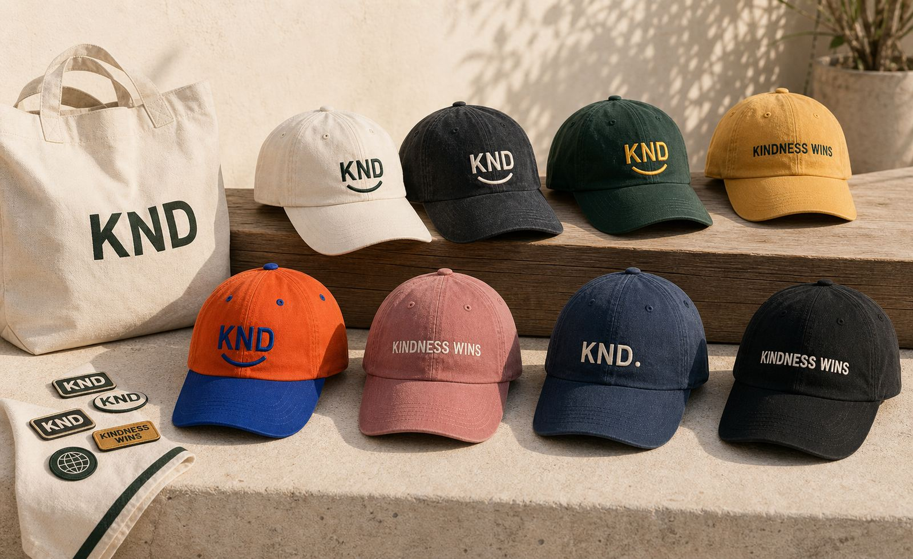
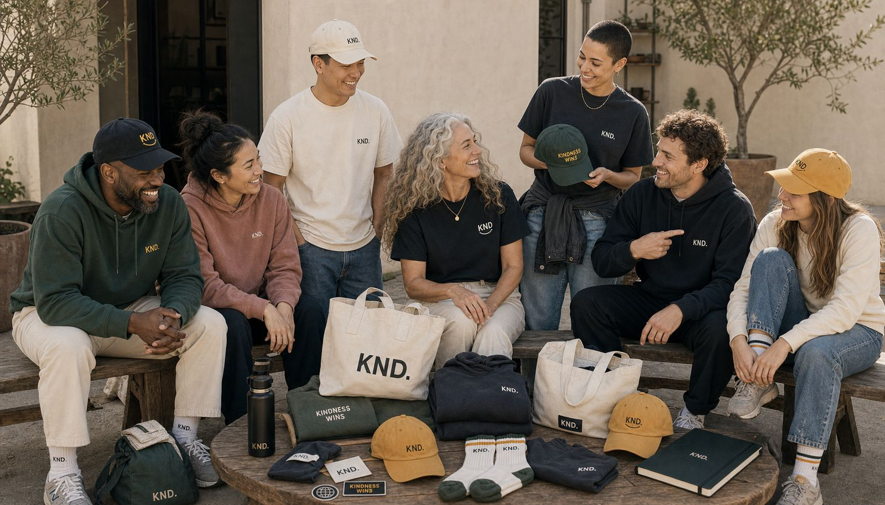
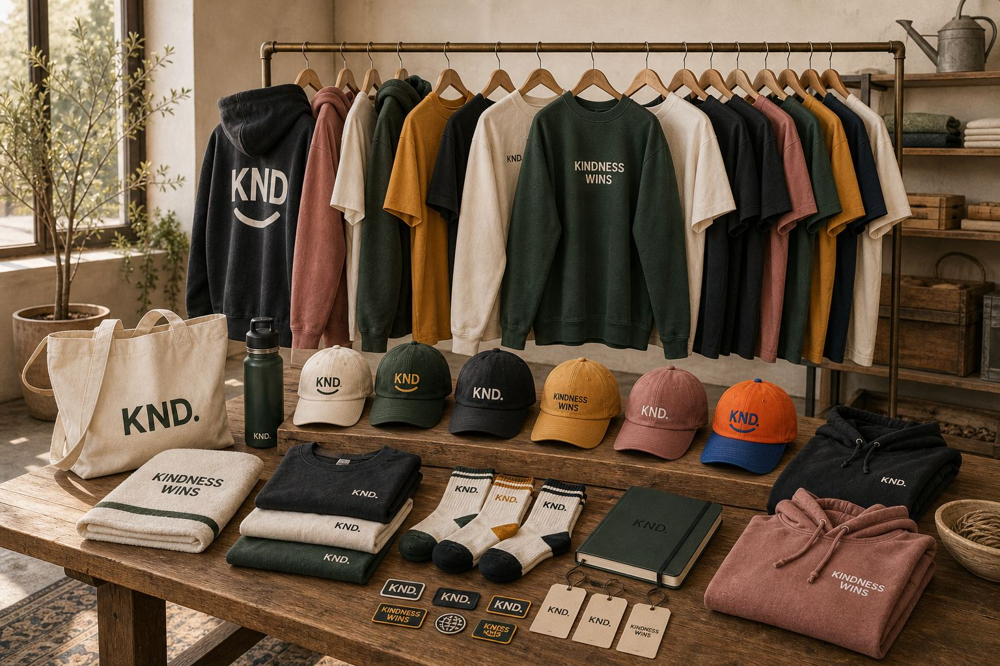

Daily Favorites
Caps, tees, hoodies, crews, and sweats that feel lived-in from the first wear.


THE PRODUCT
Everyday options with a clear emotional center.
People wear what makes them feel more like themselves.
KND gives kindness a place in the daily uniform.
They already understand the point of view.
Now the product can feel like a natural reward for living it.
OPPORTUNITIES
Caps, tees, hoodies, crews, and sweats that feel lived-in from the first wear.
Back graphics, chenille letters, hang tags, and limited capsules with a little more delight.
Totes, socks, notebooks, patches, pins, and small objects that are easy to give and easy to keep.
Orange, blue, red, green, gold, and local color when the moment asks KND to smile wider.
PHOTOGRAPHY


OPTIONALITY




